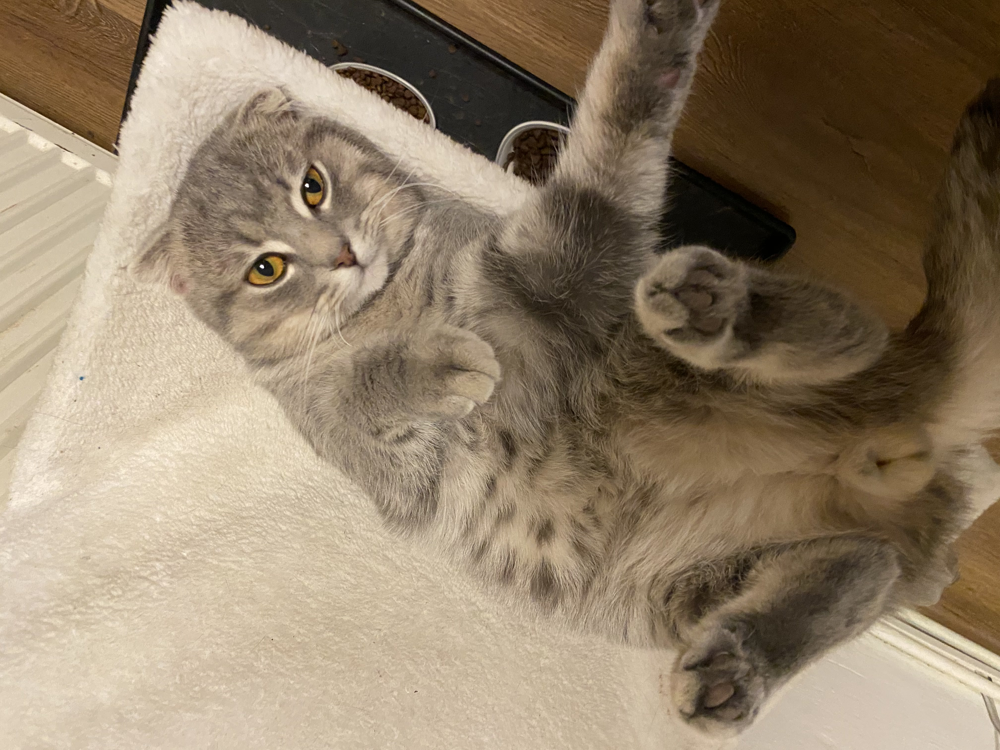
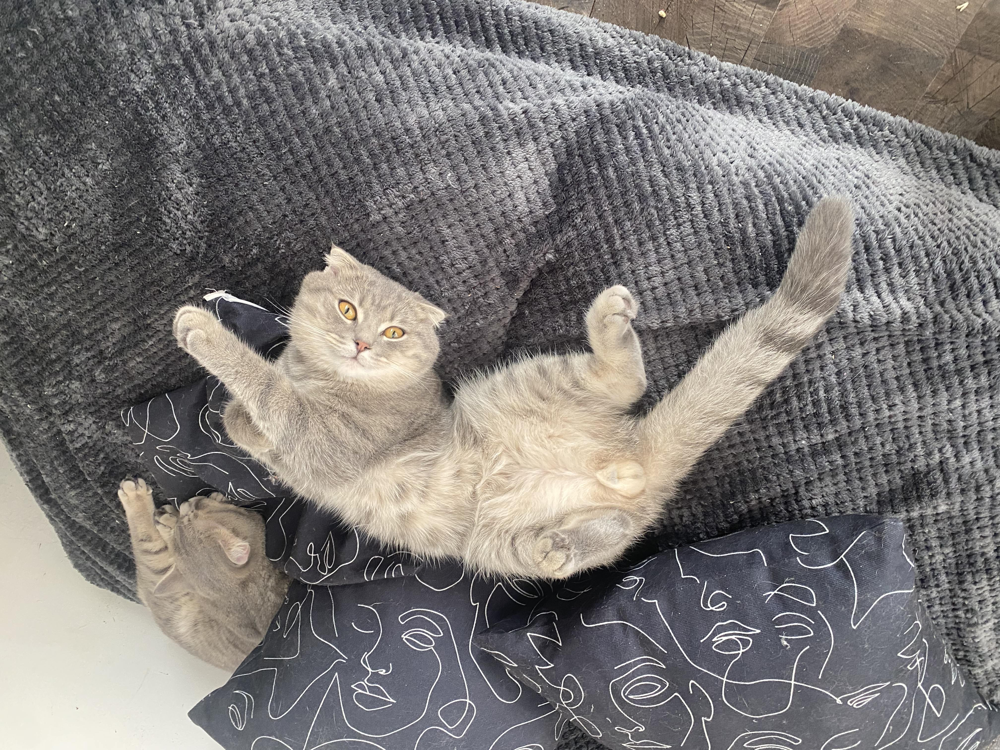

Povestea lui Urecheatu

Maestrul Torsului 🎶
Urecheatu este gigantul blând al familiei. Numele i se trage, evident, de la urechile sale mari și expresive, dar inima lui este pe măsură. Este un motan extrem de blând și afectuos.
Personalitate
Tot ce își dorește Urecheatu este să fie în preajma oamenilor și să fie mângâiat. Dacă te așezi pe canapea, poți fi sigur că în 30 de secunde va apărea și se va cuibări lângă tine, pornind imediat "motorul" de tors. Este un motan calm, liniștit și foarte răbdător cu celelalte pisici.
Preferă o sesiune lungă de scărpinat după ureche în locul unei sesiuni agitate de joacă. Este sufletul pașnic al casei.
Obiceiuri Amuzante
- Îți dă "capete" (se împinge ușor cu capul de tine) ca semn suprem de afecțiune.
- Adoarme în poziții comice, de obicei complet întins pe spate.
- Când este foarte fericit, frământă cu lăbuțele din față orice pătură moale găsește.
Mai multe poze cu Urecheatu



